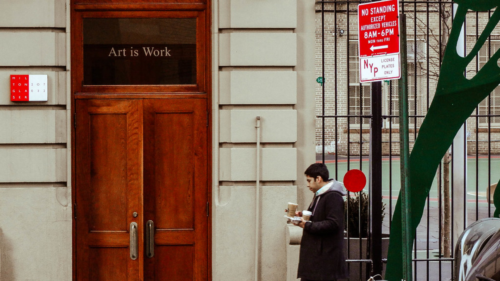

- Milton Glaser says -
"Design is always about an external
reason to go fram an existing condition
to a preferred condition."
reason to go fram an existing condition
to a preferred condition."

Milton Glaser stuido

Milton Glaser, Inc. was established in 1974.
The work produced at this Manhattan studio encompasses a wide range of design disciplines.
In the area of print graphics, the studio produces identity programs for corporate and institutional
marketing purposes - including logos, stationery, brochures, signage, and annual reports. In the field of
environmental and interior design, the firm has conceptualized and site-supervised the fabrication of
numerous products, exhibitions, interiors and exteriors of restaurants, shopping malls, supermarkets,
hotels, and other retail and commercial environments. Glaser is also personally responsible for the
design and illustration of more than 300 posters for clients in the areas of publishing, music, theater,
film, institutional and civic enterprise, as well as those for commercial products and services. The studio
continues to be a dynamic and lively place to work and create.
In the area of print graphics, the studio produces identity programs for corporate and institutional
marketing purposes - including logos, stationery, brochures, signage, and annual reports. In the field of
environmental and interior design, the firm has conceptualized and site-supervised the fabrication of
numerous products, exhibitions, interiors and exteriors of restaurants, shopping malls, supermarkets,
hotels, and other retail and commercial environments. Glaser is also personally responsible for the
design and illustration of more than 300 posters for clients in the areas of publishing, music, theater,
film, institutional and civic enterprise, as well as those for commercial products and services. The studio
continues to be a dynamic and lively place to work and create.